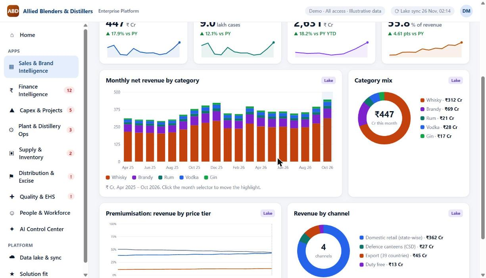
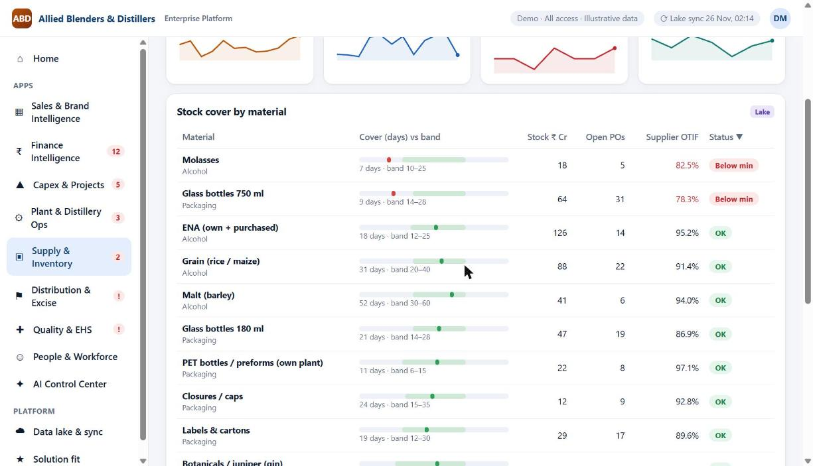
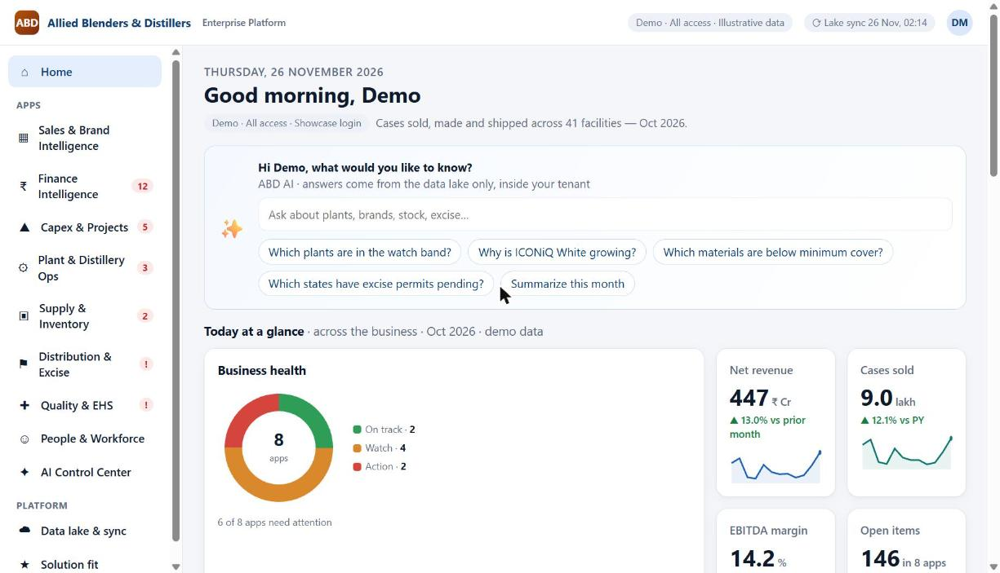
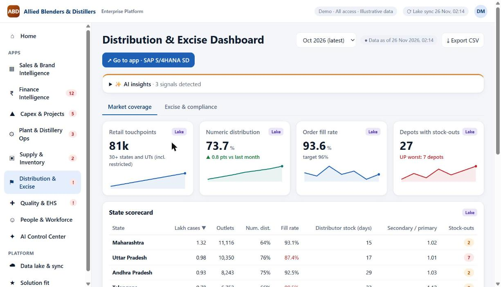

ANALYTICS PROPOSAL FOR ALLIED BLENDERS & DISTILLERS
One analytics app on top of a data lake, with no extra SAP licences for people who only need to look.
Live demo, built on sample data
THE PROBLEM
Distilleries, bottling units and a PET plant, each reporting its own way.
Each with its own excise rules, permits and price notifications.
Primary sales are visible. Stock-outs at distributors are not.
Every team needs numbers from SAP. Few can get them without a licence seat or a request to IT. Figures: abdindia.com
THE IDEA
The system of record. Orders, goods movement, payments and excise e-challans stay here, untouched.
A synced copy, hourly to daily. Also holds distributor sales, plant historians and grain and glass prices.
One dashboard per team, on any device. People who only read need no SAP licence.
Anything that writes stays in SAP. Anything that can be an hour old moves to the lake.
WHAT ABD GETS
Which brands and states are growing, and is the mix moving up?
Where is margin going: grain, glass or promotion?
Which plant is losing line time, and which distillery is under yield?
Will glass and molasses last until the festive peak?
Which states are waiting on permits, and where is stock out?
Which batches are held, and is effluent near its limit?
Also in the demo: Capex & Projects, People, and AI insights that a person approves before anything reaches SAP.
THE DEMO


THE DEMO


NEXT STEP
Discovery. Map the SAP landscape, confirm what can be synced and how, and choose the first dashboards.
Phase 1. Sales & Brand, Finance, and Distribution & Excise, running on a live lake with ABD data.
Phase 2. Plant, Supply, Quality, then forecasting and alerts.
The demo uses sample data. Phase 1 uses yours.